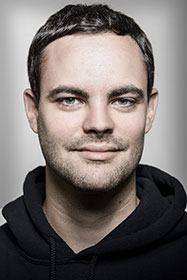

Entrepreneur, auteur et co-fondateur d'OpenClassroom

Mon expérience
De 1999 à 2007 : fondateur du Site du Zéro, site de cours en ligne pour débutants, Animation le soir et le week-end en parallèle de mes etudes.
De 2007 à 2013 : Création de Simple IT, start-up éditrice du Site du Zéro. Lancement d'une collection de livres. Evolution du site jusqu'à 2 millions de visiteurs par mois, avec 20 employés.
De 2014 à aujourd'hui : Transformation de Simple IT et du Site du Zéro en une marque unique et globale, openclassrooms. internationalisation, lancement de cours vidéo, d'une collections d'eBooks à la demande et de certificats en ligne.